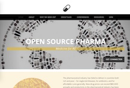
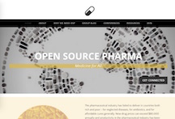

Websites
Projects. Organizations.

 

Just as nice graphic designs can be quite effective, a nice website can leave a big impact on its audience. Companies and organizations with catchy sites are likely to grab more attention and sell their ideas. I have used templates on Weebly and a bit of HTML to design simple websites for local projects in Guatemala, an orgnization in India/USA, as well as a project in Toronto. I am now focusing on my HTML skills and learning to create beautiful websites from scratch.
Take a look at the websites linked below that I've helped put together and if you are looking for a passionate designer to create a site for you, get in touch.
ATITLÁN WOMEN WEAVERS - Guatemala
MAYAN KITCHEN COOKING CLASS - Guatemala
OPEN SOURCE PHARMA FOUNDATION - India/USA
BUDDY UP TORONTO - Canada